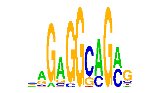

family_22 |
|---|
|  |
| Download PWM |
| Download instances (motifs) |
| Show motif distribution |
Query_ID | Query_Consensus | Subject_Name | Source_DB | Subject_ID | Length | Orientation | Offset | Divergence | Overlap | Subject_Consensus |
|---|
Sequence | Start_position (from start) | Start_position (from end) | Average conservation | Best conservation score | Instance_with_best_CS | Best_Z-score | Instance_with_best_ZS | Strand |
|---|---|---|---|---|---|---|---|---|
| chr11:5797717-5798717 | 290 | 302 | 0.00683333 | 0.019 | MAGRGGCAGC.. | 13.168679 | .AGRGGCMGC.. | 1 |
| chr9:110666441-110667441 | 585 | 597 | 0.47275 | 0.98 | ..GAGGSMGAG. | 29.928015 | ..GAGGSAGAGY | 1 |
| chr17:84012832-84013832 | 702 | 714 | 0.063 | 0.083 | .AGWGGCMGC.. | 15.160328 | .AGWGGCMGC.. | -1 |
| chr8:97951095-97952095 | 479 | 491 | 0.00675 | 0.029 | .ARAGGCMGC.. | 12.8627615 | .ARAGGCMGC.. | 1 |
| chr4:134730734-134731734 | 121 | 133 | 0.0454167 | 0.077 | ..GAGGSAGAG. | 13.934195 | ..GASGSAGAG. | -1 |
| chr14:104078739-104079739 | 892 | 904 | 0.0259167 | 0.048 | ..GASGSAGAG. | 16.397512 | ..GMGGSAGAG. | 1 |
| chr4:147374822-147375822 | 430 | 442 | 0.0390833 | 0.18 | .AGRGGCMGC.. | 13.168679 | .AGRGGCMGC.. | 1 |
| chr6:116930175-116931175 | 181 | 193 | 0.162167 | 0.171 | ..GASGSAGAG. | 14.065301 | ..GMSGCAGAG. | 1 |
| chr4:137032204-137033204 | 784 | 796 | 0.999333 | 1 | MAGRGGCAGC.. | 12.8627615 | .ARAGGCMGC.. | -1 |
| chr7:51734691-51735691 | 463 | 475 | 0.005 | 0.013 | ..GAGGKMGAG. | 12.710033 | ..GAGGKMGAG. | -1 |
| chr14:73814881-73815881 | 488 | 500 | 0.300083 | 0.61 | ..GMGGSAGAG. | 14.141425 | ..GAGGSMGAG. | 1 |
| chr5:33576744-33577744 | 860 | 872 | 0.7615 | 0.949 | MAGRGGCAGC.. | 13.168679 | .AGRGGCMGC.. | -1 |
| chr9:72627897-72628897 | 320 | 332 | 0.00175 | 0.004 | ..GAGGSAGAGY | 14.141425 | ..GAGGSMGAG. | 1 |
| chr6:24480023-24481023 | 265 | 277 | 0.00483333 | 0.011 | .ARAGGCMGC.. | 20.895836 | MAGAGGCMGC.. | -1 |
| chr3:130602895-130603895 | 361 | 373 | 0.00583333 | 0.015 | ..GMSGCAGAG. | 14.065301 | ..GMSGCAGAG. | 1 |
| chr2:154768406-154769406 | 381 | 393 | 0.00275 | 0.006 | ..GMSGCAGAG. | 29.928015 | ..GAGGSAGAGY | -1 |
| chr14:66588950-66589950 | 154 | 166 | 0.000666667 | 0.004 | .MGAGGCMGC.. | 12.8627615 | .ARAGGCMGC.. | -1 |
| chr6:127939598-127940598 | 32 | 44 | 0 | 0 | ..GAGGKMGAG. | 16.397512 | ..GMGGSAGAG. | -1 |
| chr6:86465629-86466629 | 473 | 485 | 0.952083 | 0.998 | .ARAGGCMGC.. | 12.8627615 | .ARAGGCMGC.. | 1 |
| chr11:88065281-88066281 | 654 | 666 | 0.0325833 | 0.086 | ..GAGGSMGAG. | 14.141425 | ..GAGGSMGAG. | 1 |
| chr1:137695826-137696826 | 936 | 948 | 0.0101667 | 0.036 | .ARAGGCMGC.. | 12.8627615 | .ARAGGCMGC.. | 1 |
| chr7:51729362-51730362 | 793 | 805 | 0 | 0 | MAGAGGCMGC.. | 13.168679 | .AGRGGCMGC.. | -1 |
| chr4:137476602-137477602 | 304 | 316 | 0.00758333 | 0.018 | .AGRGGCMGC.. | 13.168679 | .AGRGGCMGC.. | -1 |
| chr4:128970573-128971573 | 103 | 115 | 0.112083 | 0.341 | .MGAGGCMGC.. | 15.420569 | .MGAGGCMGC.. | 1 |
| chr4:129472154-129473154 | 231 | 243 | 0.00925 | 0.033 | .ARAGGCMGC.. | 12.710102 | MAGRGGCAGC.. | -1 |
| chr1:137695826-137696826 | 98 | 110 | 0.839 | 0.943 | .AGRGGCMGC.. | 13.168679 | .AGRGGCMGC.. | 1 |
| chr7:51729362-51730362 | 309 | 321 | 0.01675 | 0.03 | ..GMGGSAGAG. | 14.141425 | ..GAGGSMGAG. | -1 |
| chr15:100446141-100447141 | 431 | 443 | 0 | 0 | ..GMGGGMGAG. | 16.843723 | ..GMGGGMGAG. | -1 |
| chr15:103138701-103139701 | 529 | 541 | 0.00108333 | 0.005 | .ARAGGCMGC.. | 12.8627615 | .ARAGGCMGC.. | -1 |
| chr6:116930175-116931175 | 841 | 853 | 0.00683333 | 0.009 | ..GAGGSAGAGY | 12.710033 | ..GAGGKMGAG. | 1 |
| chr15:36538708-36539708 | 279 | 291 | 0.00408333 | 0.012 | .MGAGGCMGC.. | 15.420569 | .MGAGGCMGC.. | -1 |
| chr11:114059629-114060629 | 620 | 632 | 0.00075 | 0.003 | ..GAGGSMGAG. | 16.397512 | ..GMGGSAGAG. | 1 |
| chr7:150644976-150645976 | 616 | 628 | 0.967083 | 0.998 | ..GAGGKMGAG. | 16.843723 | ..GMGGGMGAG. | 1 |
| chr11:87982958-87983958 | 714 | 726 | 0.540333 | 1 | ..GAGGKMGAG. | 12.710033 | ..GAGGKMGAG. | 1 |
| chr13:114670382-114671382 | 600 | 612 | 0.953667 | 1 | .ARAGGCMGC.. | 12.8627615 | .ARAGGCMGC.. | -1 |
| chr7:135349261-135350261 | 534 | 546 | 0.911667 | 1 | ..GAGGSAGAGY | 14.141425 | ..GAGGSMGAG. | 1 |
| chr4:129472154-129473154 | 126 | 138 | 0.004 | 0.013 | .AGRGGCMGC.. | 13.168679 | .AGRGGCMGC.. | -1 |
| chr6:124869568-124870568 | 94 | 106 | 0.911083 | 1 | ..GMGGGMGAG. | 12.710033 | ..GAGGKMGAG. | -1 |
| chr10:120309136-120310136 | 387 | 399 | 0.776833 | 1 | .MGAGGCMGC.. | 12.8627615 | .ARAGGCMGC.. | -1 |
| chr7:51734691-51735691 | 790 | 802 | 0.363917 | 0.567 | ..GMSGCAGAG. | 13.923143 | ..GAGGSAGAG. | -1 |
| chr14:104078739-104079739 | 434 | 446 | 0.149 | 0.439 | ..GAGGKMGAG. | 16.843723 | ..GMGGGMGAG. | 1 |
| chr17:48571335-48572335 | 575 | 587 | 0.81625 | 0.999 | .AGRGGCMGC.. | 15.913906 | .AGAGGCMGC.. | -1 |
| chr19:44320474-44321474 | 773 | 785 | NA | NA | ..GASGSAGAG. | 16.843723 | ..GMGGGMGAG. | -1 |
| chr4:134842576-134843576 | 384 | 396 | 0.00116667 | 0.002 | .MGAGGCMGC.. | 15.160328 | .AGWGGCMGC.. | -1 |
| chr7:88710293-88711293 | 393 | 405 | 0 | 0 | .AGRGGCMGC.. | 13.168679 | .AGRGGCMGC.. | -1 |
| chr6:124869568-124870568 | 716 | 728 | 1 | 1 | ..GMGGSAGAG. | 14.141425 | ..GAGGSMGAG. | 1 |
| chr13:30437006-30438006 | 566 | 578 | 0.00658333 | 0.026 | .ARAGGCMGC.. | 12.8627615 | .ARAGGCMGC.. | 1 |
| chr4:107518583-107519583 | 490 | 502 | 0.637833 | 1 | ..GMGGGMGAG. | 16.843723 | ..GMGGGMGAG. | 1 |
| chr6:86437151-86438151 | 176 | 188 | 0.345833 | 0.361 | ..GAGGKMGAG. | 12.710033 | ..GAGGKMGAG. | 1 |
| chr6:86465629-86466629 | 447 | 459 | 0.3315 | 0.52 | ..GAGGSMGAG. | 29.928015 | ..GAGGSAGAGY | 1 |
| chr1:174173759-174174759 | 131 | 143 | 0.00116667 | 0.003 | MAGRGGCAGC.. | 15.160328 | .AGWGGCMGC.. | -1 |
| chr5:115964921-115965921 | 25 | 37 | 0.355667 | 0.525 | ..GAGGSMGAG. | 29.928015 | ..GAGGSAGAGY | 1 |
| chr12:86446899-86447899 | 751 | 763 | 0.15325 | 0.21 | ..GAGGSMGAG. | 14.141425 | ..GAGGSMGAG. | -1 |
| chr17:24566035-24567035 | 262 | 274 | 0.0356667 | 0.054 | ..GMGGGMGAG. | 14.141425 | ..GAGGSMGAG. | -1 |
| chr7:134170729-134171729 | 225 | 237 | 0.929833 | 1 | ..GMGGSAGAG. | 16.843723 | ..GMGGGMGAG. | 1 |
| chr3:130602895-130603895 | 358 | 370 | 0.006 | 0.021 | .AGWGGCMGC.. | 20.895836 | MAGAGGCMGC.. | 1 |
| chr4:134722044-134723044 | 560 | 572 | 0.849917 | 1 | ..GMSGCAGAG. | 14.065301 | ..GMSGCAGAG. | 1 |
| chr4:129472154-129473154 | 237 | 249 | 0.0449167 | 0.103 | ..GMSGCAGAG. | 14.065301 | ..GMSGCAGAG. | -1 |
| chr1:10029535-10030535 | 673 | 685 | 0.0035 | 0.013 | .AGWGGCMGC.. | 15.420569 | .MGAGGCMGC.. | -1 |
| chr9:21903842-21904842 | 517 | 529 | 0.000333333 | 0.001 | ..GMGGGMGAG. | 13.934195 | ..GASGSAGAG. | 1 |
| chr15:36538708-36539708 | 428 | 440 | 0.00191667 | 0.01 | .AGAGGCMGC.. | 12.8627615 | .ARAGGCMGC.. | -1 |
| chr11:114026936-114027936 | 377 | 389 | 0.589333 | 1 | .AGWGGCMGC.. | 15.160328 | .AGWGGCMGC.. | -1 |
| chr6:127939598-127940598 | 978 | 990 | 0.000416667 | 0.001 | .MGAGGCMGC.. | 15.420569 | .MGAGGCMGC.. | 1 |
| chr7:150644976-150645976 | 622 | 634 | 0.9145 | 0.972 | ..GASGSAGAG. | 13.923143 | ..GAGGSAGAG. | 1 |
| chr1:174420056-174421056 | 765 | 777 | 0.916917 | 0.997 | .MGAGGCMGC.. | 15.420569 | .MGAGGCMGC.. | 1 |
| chr14:104864768-104865768 | 426 | 438 | 1 | 1 | ..GAGGSMGAG. | 14.141425 | ..GAGGSMGAG. | -1 |
| chr1:174149318-174150318 | 735 | 747 | 0.997917 | 1 | .AGRGGCMGC.. | 12.710102 | MAGRGGCAGC.. | -1 |
| chr17:84012832-84013832 | 531 | 543 | 0.1075 | 0.326 | ..GAGGSAGAG. | 13.934195 | ..GASGSAGAG. | -1 |
| chr2:13499638-13500638 | 711 | 723 | 0.984 | 1 | ..GAGGSMGAG. | 14.141425 | ..GAGGSMGAG. | 1 |
| chr17:48571335-48572335 | 650 | 662 | 0.88025 | 0.921 | ..GMSGCAGAG. | 16.397512 | ..GMGGSAGAG. | 1 |
| chr5:31208244-31209244 | 728 | 740 | 1 | 1 | .AGWGGCMGC.. | 15.160328 | .AGWGGCMGC.. | 1 |
| chr19:47829769-47830769 | 425 | 437 | 0.000166667 | 0.001 | ..GMGGSAGAG. | 14.065301 | ..GMSGCAGAG. | -1 |
| chr6:51420374-51421374 | 86 | 98 | 0.0015 | 0.007 | ..GMSGCAGAG. | 13.934195 | ..GASGSAGAG. | 1 |